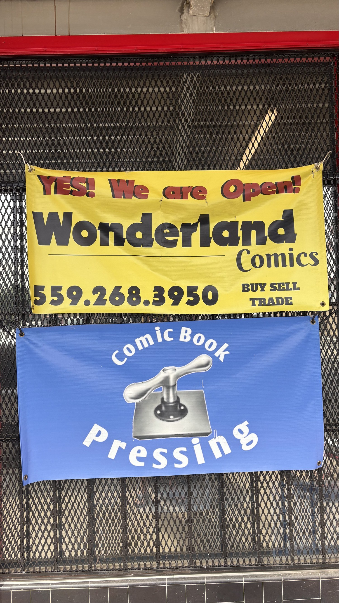
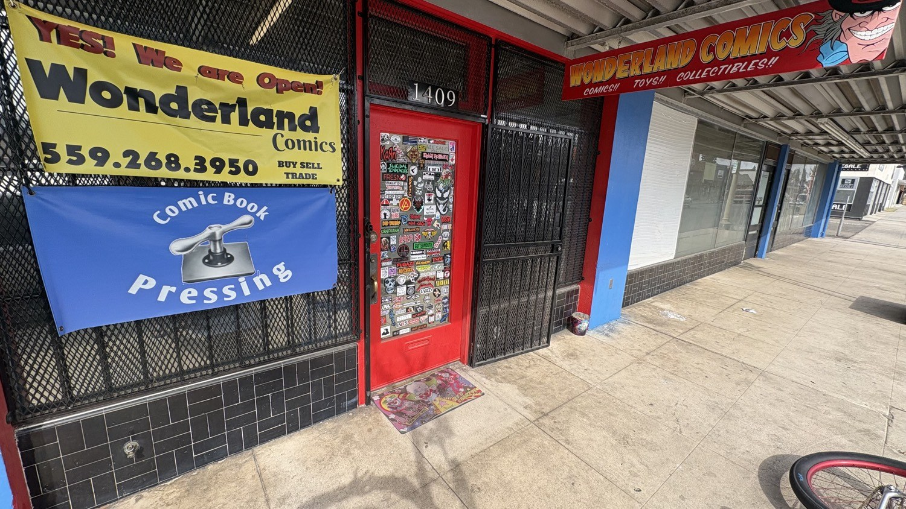
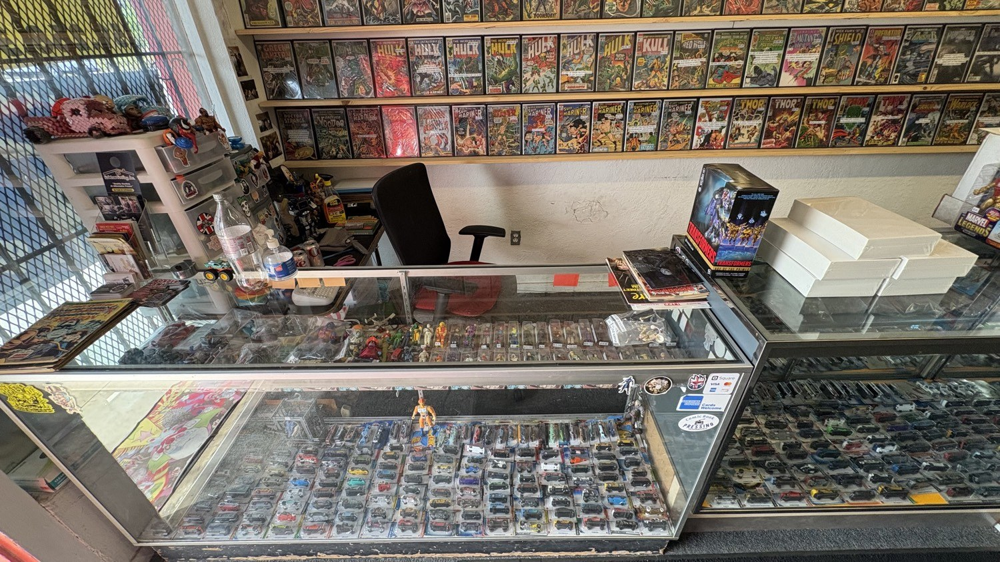
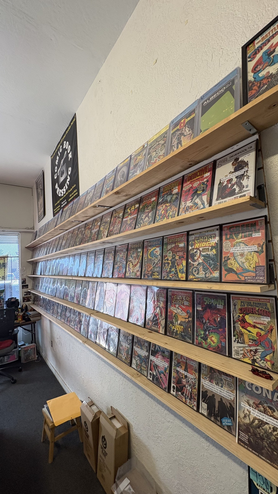
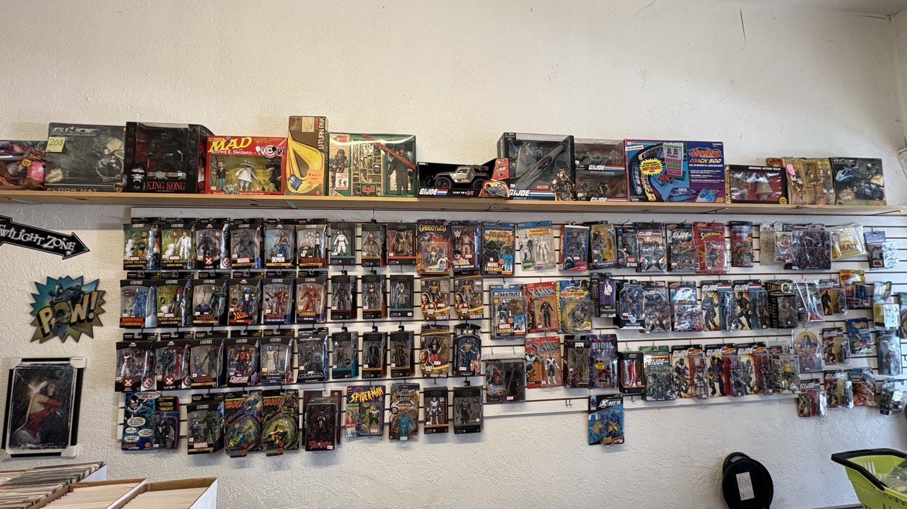
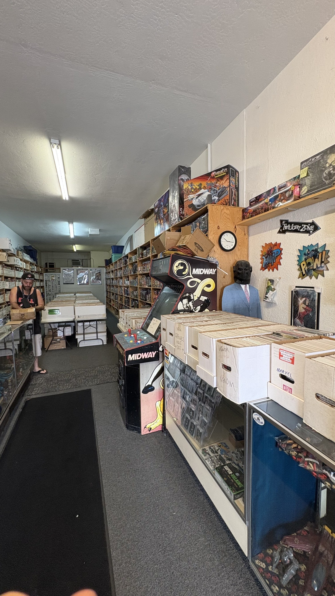
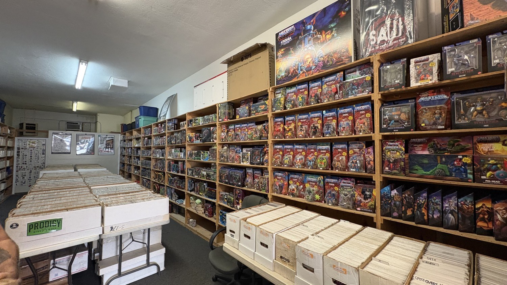

The first thing the sidewalk tells you is not subtle. A yellow vinyl banner is wired to the security grate: YES! We are Open! Under that, the name in block black, the 559 number, and four words that have been the business model since before most of the current customers were born: buy, sell, trade.

Fresno 93728
10 to 5
Toys · Pressing
The red door at 1409
The door itself is a bulletin board that nobody planned. Stickers on stickers. A doormat with a clown. The number 1409 sits in white above the frame. Next to it, under the corrugated awning, the long red sign does the work a storefront used to do with painted glass: Wonderland Comics. Comics. Toys. Collectibles. A grinning character in a top hat looks down Van Ness toward the laundromat and the parked cars.

How a swap-meet table became a street
The shop did not begin on Van Ness. In 1965 Wayne Barber teamed with Bruce Campiano and sold comics at the Sunnyside Swap Meet under the name Bruce Wayne. That is not a branding joke invented later. That is the name they used on the table.
In 1974 Wayne opened Wonderland Comics at Belmont and Abby. In 1984 he moved the store to the current Van Ness address. Those three dates are the official spine of the place. Swap meet. First shop. Current shop. Fifty-plus years of the same inventory logic: older books, deeper bins, find the issue if it exists.
Wayne told the Fresno Bee in 2015 that he got hooked in 1959 from a box of cousins' comics, that he had been a biology major at Fresno State, and that he opened the shop after graduating because every job he applied for already had fifty people with more experience. The collection he brought in was already close to 30,000 books. The shop later described itself as a back-issue store with more than 300,000 issues. If you need it, they can find it. That sentence is still the listing copy.
- 1965. Bruce Wayne table at Sunnyside Swap Meet.
- 1974. Wonderland Comics opens at Belmont and Abby.
- 1984. Move to 1409 N Van Ness.
- 2015. Fresno Bee films Wayne for Fresno Famous.
- 2025. Wayne Barber dies at 82. The shop stays open.
- 2026. Yellow banner still says yes.
The torch
After several strokes, Wayne could not run the day to day. The shop's own memorial post said he passed the torch knowing Wonderland would remain a staple in Fresno. On good days he still came in to sit among the books. He died in August 2025 at 82. FOX26 covered a gathering at the store. Bruce Campiano came back to talk. Customers treated the room like a wake that already had a cash register.
Reviews since the change of hands keep repeating one name: Timmy. Straight, no theater, prices that match the bins. The Yelp file still carries the old question, who runs the shop now, and the short answer from a customer: new owners. The inventory did not leave with the founder. That is the rare version of a local handoff.
What the room is actually selling
This is not a new-release Wednesday shop pretending to be a museum. The front counter is a glass case of die-cast cars and bagged figures. Behind the register, longboxes of Hulk, Thor, Sub-Mariner, Kull, and Green Lantern sit spine-out like a working archive. Transformers on the glass. Hand sanitizer next to the soda bottle. A black office chair. The room is used.


The blue banner on the grate is not decoration. Comic book pressing is a real service here. Flatten the wave. Knock down the spine roll. Make a book presentable without pretending it became a different book. In a market that grades paper like jewelry, a press in the Tower District is a local machine against out-of-town slab culture.

Deeper in, the store becomes a warehouse with a Midway cabinet in the aisle. Mortal Kombat art on the side. White longboxes labeled Venom and Marvel. Masters of the Universe carded on the tall pine. A Saw box set over the top shelf because horror shares square footage with He-Man and nobody is performing taste. A staffer in a tank top works a box at a folding table. Fluorescent tubes. Carpet path. This is how a 300,000-issue claim looks when it is not a press release.


Why this belongs on Van Ness
The Tower District keeps losing rooms that used to hold analog culture. Record shops thin out. Arcades become memories. A comic store that still has a Midway cabinet in the walkway is not a theme restaurant. It is leftover infrastructure.
Parking is a Tower problem, not a Wonderland problem. Reviewers say that out loud and then walk anyway. The shop is closed Sunday and Monday. Open 10 to 5 the rest of the week. Cash and cards. No online store worth mentioning. If you want the book, you come to 1409 or you call the 559 number painted on the yellow vinyl.
That is the whole offer. A founder who started at a swap meet in 1965. A street address that has held since 1984. A door covered in other people's stickers. A press in the back. Bins deep enough that "if you need it we can find it" is still a working sentence.
If you go
Wonderland Comics, 1409 N Van Ness Ave, Fresno, CA 93728. Phone 559-268-3950. Tuesday through Saturday, 10 a.m. to 5 p.m. Closed Sunday and Monday. Facebook: Wonderland Comics Fresno.
Hours can shift. Call before a special trip. The banners on the grate are the current status board.
Sources
- Photographs made on Van Ness, August 28, 2026, for this story.
- Wonderland Comics Fresno, Facebook memorial post for Wayne Barber, August 20, 2025.
- James Mora, "Wonderland Comics community gathers to bid farewell to store founder," FOX26 / KMPH, August 23, 2025.
- Fresno Bee, "Fresno Famous: Wonder Land Comics owner Wayne Barber," March 13, 2015.
- Yelp and Comics Eternal listings for 1409 N Van Ness, hours, and the shop's own back-issue description.
High Tower District story. Local inventory, local dates, no mythology added on top of the banners.